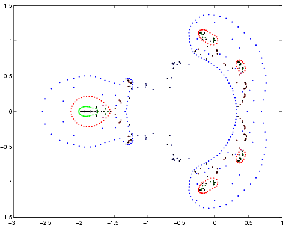
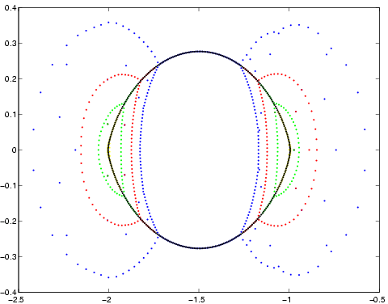
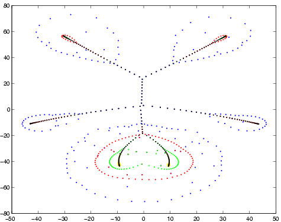
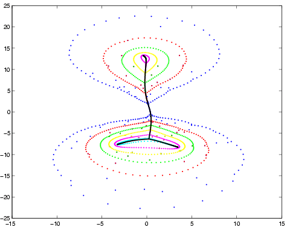
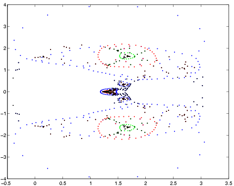
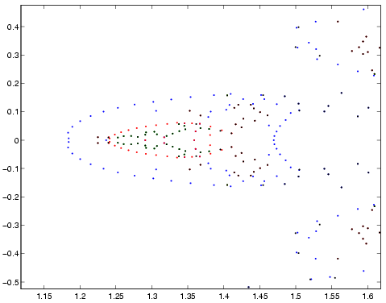

This
shows the iterates of eigensolve on the Mandelbrot polynomial of degree
255. The roots are black. In this case, the computation took
5 iterations and 28 seconds (on a 250 MHZ SGI R10000). Two iterations
are not visible, since the root estimates were very close to the true roots.
These
are the iterates on the Sendra polynomial of degree 320. The roots
are the black ellipse. The first three iterations are in blue, red,
and green; another iteration is not visible. Various roots are discovered
at early iterations; for example, the black roots outside the two blue
bean-shaped regions were discovered at the first iteration. The computation
took 74 seconds.
A
Toeplitz polynomial of degree 256. The computation required 4 iterations
and 36 seconds.
Another
slightly more difficult Toeplitz polynomial of degree 256. This computation
took 7 iterations and 51 seconds.
A
chromatic polynomial of degree 340; 4 iterations, 69 seconds computing
time.
Zooming
in on the center of the picture above.